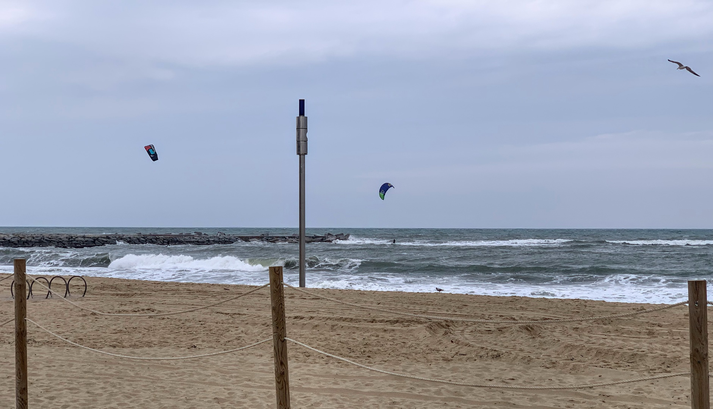
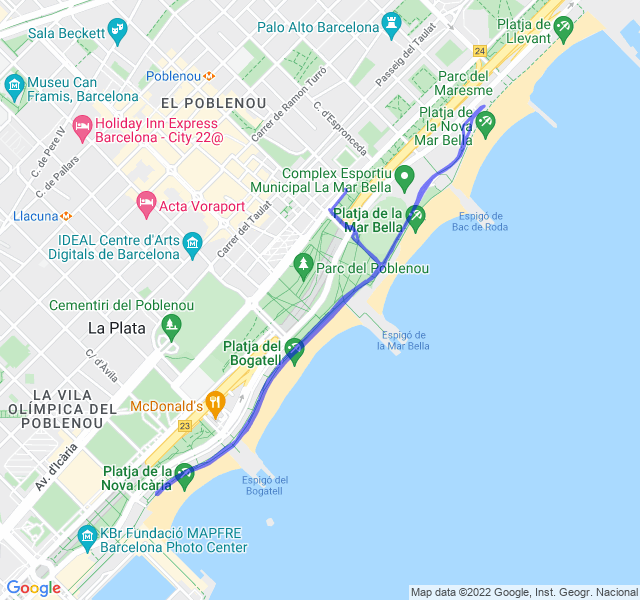

3x5000 abortito
| 1 min read
Poche nuvole, 16°C, Percepito 15°C, Umidità 64%, Vento 11m/s da NE
Giornata ventosa, troppo ventosa per un allenamento di qualità: 30km/h raffiche a 55km/h.

Ho provato a fare la prima ripetuta ma appena ho girato controvento è stato chiaro che non sarebbe stato fattibile portarlo a termine decentemente.
Ci riproveremo.
